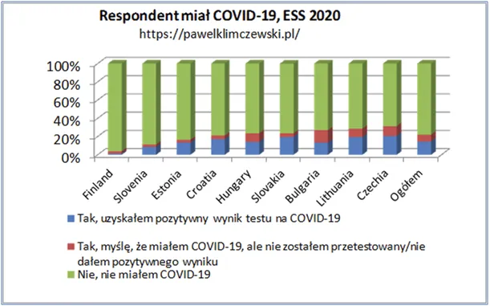
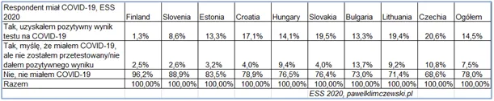
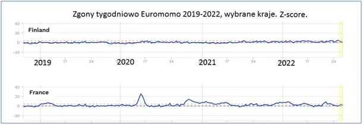

Finowie sypią
Z dużym opóźnieniem i z niewielu krajów dotarły wyniki badań z Europejskiego Sondażu Społecznego. Badanie robione w wielu krajach taką samą ankietą jest doskonałym materiałem do porównań. Niestety transza z 2020 w wielu krajach nie została zrealizowana z powodu "morderczej pandemii". Na szczęście mamy wyniki z 10 państw i jest w nich coś, co nas ucieszy i rozbawi. Badanie jest koordynowane przez ośrodki akademickie. Opracowałem już dawno raport, z którego wynikało, że Finowie nie odczuli żadnej zmiany w śmiertelności w ostatnich 2 latach, podobnie było w Norwegii, ale już nie w mitycznej Szwecji.


Zajrzyjmy do badania. Na tysiące osób pytanych w każdym kraju mamy bardzo różne wyniki. Osób, które myśli, że chorowało na covid (mimo, że nie wiedzą tego z testu) jest od 2,5% w Finlandii do 10,8% w Czechach, Czesi też "wygrywają" w pozytywnych testach, co piąty Czech miał plusa, Fin, tylko co osiemdziesiąty. Nie wiemy, jakie odsetki ludzi były testowane, więc trzymajmy się odpowiedzi drugiej: " Tak, myślę, że miałem COVID-19, ale nie zostałem przetestowany/nie dałem pozytywnego wyniku". Czterokrotna przewaga Czechów nad Finami mówi nam o sile propagandy strachu, której w Skandynawii nie prowadzono. I tak to, zapewne niechcący, Finowie powiedzieli nam, jak to było.

Paweł Klimczewski